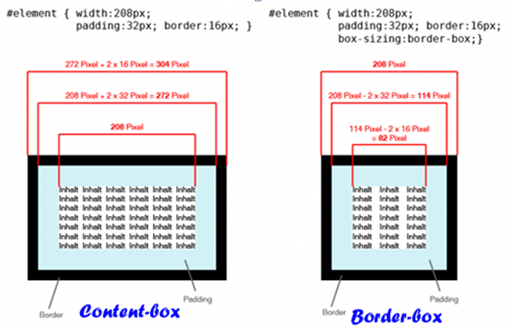

语法：
box-sizing:取值
说明：
box-sizing属性能够事先定义盒模型的尺寸解析方式
在css中盒模型被分为两种，第一种是w3c的标准模型，另一种是ie的传统模型，如下计算公式
1.W3C标准盒模型
外盒尺寸计算（元素空间尺寸） element空间高度＝内容高度＋内距＋边框＋外距 element空间宽度＝内容宽度＋内距＋边框＋外距 内盒尺寸计算（元素大小） element高度＝内容高度＋内距＋边框（height为内容高度） element宽度＝内容宽度＋内距＋边框（width为内容宽度）
2.IE传统下盒模型（IE6以下，不包含IE6版本或”QuirksMode下IE5.5+”）
外盒尺寸计算（元素空间尺寸） element空间高度＝内容高度＋外距（height包含了元素内容宽度、边框、内距） element宽间宽度＝内容宽度＋外距（width包含了元素内容宽度、边框、内距） 内盒尺寸计算（元素大小） element高度＝内容高度（height包含了元素内容宽度、边框、内距） element宽度＝内容宽度（width包含了元素内容宽度、边框、内距）
| 属性值 | 说明 |
|---|---|
| content-box | 默认值，其让元素维持W3C的标准盒模型，也就是说元素的宽度和高度（width/height）等于元素边框宽度（border）加上元素内距（padding）加上元素内容宽度或高度（content width/ height），也就是element width/height = border + padding + content width / height |
| border-box | 重新定义CSS2.1中盒模型组成的模式，让元素维持IE传统的盒模型（IE6以下版本和IE6-7怪异模式），也就是说元素的宽度或高度等于元素内容的宽度或高度。从上面盒模型介绍可知，这里的内容宽度或高度包含了元素的border、padding、内容的宽度或高度（此处的内容宽度或高度＝盒子的宽度或高度―边框―内距）。 |
| inherit | 使元素继承父元素的盒模型模式 |
使用方法：
box-sizing:content-box; /**/
兼容性：
- 浅绿 = 支持
- 红色 = 不支持
- 粉色 = 部分支持
| IE | Firefox | Safari | Chrome | Opera |
|---|---|---|---|---|
| 6.0-7.0 | 4.0-28.0 -moz- | 4.0-5.0 -webkit- | 4.0-9.0 -webkit- | 15.0 |
| 8.0 -ms- | ||||
| 9.0 | 29.0 | 5.1 | 10.0 |
事例：
